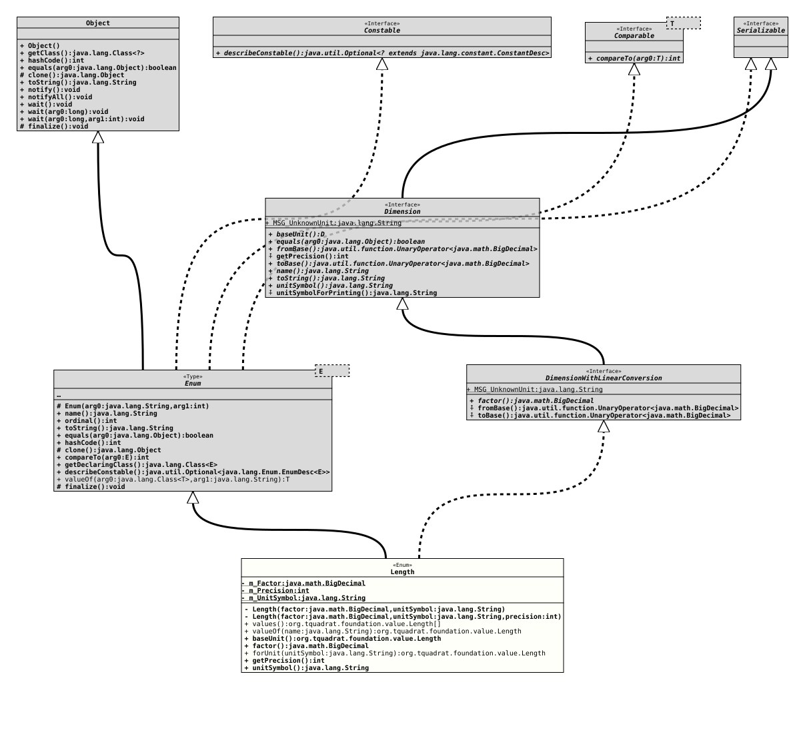

Enum Class Length
- All Implemented Interfaces:
Serializable, Comparable<Length>, Constable, Dimension, DimensionWithLinearConversion
@ClassVersion(sourceVersion="$Id: Length.java 1072 2023-09-30 20:44:38Z tquadrat $")
@API(status=STABLE,
since="0.1.0")
public enum Length
extends Enum<Length>
implements DimensionWithLinearConversion
The various instances of length …
- Author:
- Thomas Thrien (thomas.thrien@tquadrat.org)
- Version:
- $Id: Length.java 1072 2023-09-30 20:44:38Z tquadrat $
- Since:
- 0.1.0
- UML Diagram
-

UML Diagram for "org.tquadrat.foundation.value.Length"
{kind=link}
-
Nested Class Summary
Nested classes/interfaces inherited from class Enum
Enum.EnumDesc<E> -
Enum Constant Summary
Enum ConstantsEnum ConstantDescriptionAn Ångström.An astronomical unit.A centimeter.A decimeter.A fathom.A foot (12 inch).An inch.A kilometer.A light year.A meter.A mikrometer.A mile (1760 yard).A millimeter.A nanometer.A nautical or sea mile.A parsec, according to the definition of the IAU.A typographical dot.A yard (3 feet). -
Field Summary
FieldsModifier and TypeFieldDescriptionprivate final BigDecimalThe factor.private final intThe default precision.private final StringThe unit string.Fields inherited from interface DimensionWithLinearConversion
MSG_UnknownUnit -
Constructor Summary
ConstructorsModifierConstructorDescriptionprivateLength(BigDecimal factor, String unitSymbol) Creates a newLengthinstance, with a default precision of zero mantissa digits.privateLength(BigDecimal factor, String unitSymbol, int precision) Creates a newLengthinstance. -
Method Summary
Modifier and TypeMethodDescriptionfinal LengthbaseUnit()Returns the base unit.final BigDecimalfactor()Returns the factor that is used to convert a value from this unit to the base unit.static final LengthReturns theLengthinstance for the given unit symbol.final intReturns the default precision for this unit that is used when the respective value is converted to a String.final StringReturns the unit symbol for the dimension as a single line string.static LengthReturns the enum constant of this class with the specified name.static Length[]values()Returns an array containing the constants of this enum class, in the order they are declared.Methods inherited from class Enum
clone, compareTo, describeConstable, equals, finalize, getDeclaringClass, hashCode, name, ordinal, toString, valueOfMethods inherited from interface Dimension
equals, name, toString, unitSymbolForPrintingMethods inherited from interface DimensionWithLinearConversion
fromBase, toBase
-
Enum Constant Details
-
ÅNGSTRÖM
-
NANOMETER
-
MICROMETER
A mikrometer. -
PICA
-
MILLIMETER
A millimeter. -
CENTIMETER
A centimeter. -
INCH
-
DECIMETER
-
FOOT
-
YARD
-
METER
-
FATHOM
-
CABLE
-
KILOMETER
-
MILE
-
NAUTICAL_MILE
A nautical or sea mile. -
ASTRONOMICAL_UNIT
An astronomical unit. -
LIGHTYEAR
-
PARSEC
-
-
Field Details
-
m_Factor
The factor. -
m_Precision
The default precision. -
m_UnitSymbol
The unit string.
-
-
Constructor Details
-
Length
Creates a newLengthinstance, with a default precision of zero mantissa digits.- Parameters:
factor- The factor.unitSymbol- The unit symbol String.
-
Length
Creates a newLengthinstance.- Parameters:
factor- The factor.unitSymbol- The unit symbol String.precision- The default precision.
-
-
Method Details
-
values
-
valueOf
Returns the enum constant of this class with the specified name. The string must match exactly an identifier used to declare an enum constant in this class. (Extraneous whitespace characters are not permitted.)- Parameters:
name- the name of the enum constant to be returned.- Returns:
- the enum constant with the specified name
- Throws:
IllegalArgumentException- if this enum class has no constant with the specified nameNullPointerException- if the argument is null
-
baseUnit
-
factor
Returns the factor that is used to convert a value from this unit to the base unit.
For length, if you have to convert a Centimeter value to Meter, you will divide that by 100 or multiply it with a factor of 0.01.
For the base unit, the factor is 1.0.
- Specified by:
factorin interfaceDimensionWithLinearConversion- Returns:
- The factor.
- See Also:
-
forUnit
Returns theLengthinstance for the given unit symbol.- Parameters:
unitSymbol- The unit symbol.- Returns:
- The respective instance.
- Throws:
IllegalArgumentException- The given unit is unknown.
-
getPrecision
Returns the default precision for this unit that is used when the respective value is converted to a String.- Specified by:
getPrecisionin interfaceDimension- Returns:
- The mantissa length for a value with this unit.
-
unitSymbol
Returns the unit symbol for the dimension as a single line string.
For a length, this would be "m", for a speed "km/h", and for an acceleration, it could be "m/(s^2)".
- Specified by:
unitSymbolin interfaceDimension- Returns:
- The unit.
-